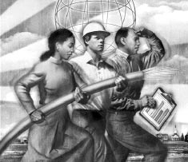
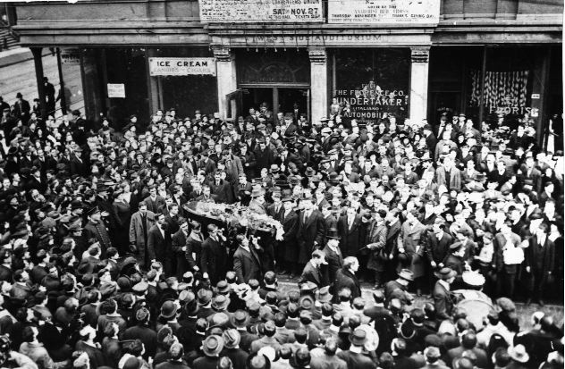
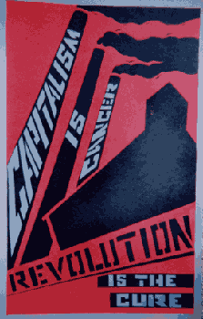
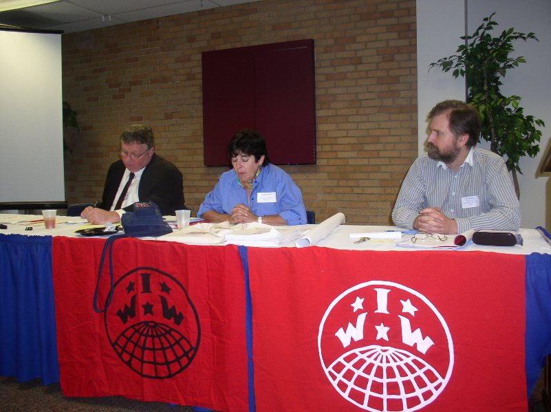

This is the news page for all IWW Departments and Unions. This page displays *all* news items from every Department and Union. To see news only from a particular Department, click on the Department title below.
For an overview of the IWW's Union structure, please visit the Unions homepage.
For branch, campaign, or general labor news, click on the appropriate sub-menu bars at the left under
the main "news" bar.
Submitted on Tue, 11/22/2005 - 5:22am
自從1970年，全世界有個大改變。 前所未知的"財富"轉移，導致無數人貧窮，而少數幾個富到以往所無法夢想。我們可以看到：
今天，世界的340位億萬富翁控制的財富，超過20億最窮的人的總所有。每天我們看到飢餓，環境惡化和人類文明的毀壞，為了什麼呢？讓區區一、二千人暴富和掌權。
我們看到了所謂「共產主義」體制的崩解，還有一個差不了多少的自由市場體系的開始。
我們看到工業主義移到前社會主義國家和"開發中"國家和連帶的狂買情況和資源整批竊盜的興起。
世界工業勞工（IWW或Wobblies）是從1905年開始就存在的革命工聯。IWW是由北美洲要求一個真正激進，民主工會的一般勞工所建立。
在工會中，Wobblies是有名的，老闆們怕我們。透過我們民主的結構，彈性策略，團結和未來的願景，IWW的影響一直被全世界感受到。
而IWW在今天比以往更加重要。我們希望這份簡介，能鼓舞你加入我們，一起建造所有勞工的「單一大聯盟」，並一舉掃除剝削的資本主義和階級社會。
原則
The IWW憲章的開宗明義，宣明了我們的基本原則：
Submitted on Mon, 11/14/2005 - 3:23pm
Disclaimer - The following article is reposted here because it is an issue with some relevance to the IWW. The views of the author do not necessarily agree with those of the IWW and vice versa.
By Harry Kelber ( First in a series of six articles)
They publish and distribute tons of costly literature that point up the strong advantages of belonging to a union. They provide evidence that union members earn more and have better benefits than non-union workers for doing essentially the same job, and that it applies equally to women and minorities.
As a union member, they will no longer be subject to the whims and unilateral decisions of their bosses. They'll have a union with lots of resources and influence to protect them. They'll have a "voice" in improving conditions in the workplace and deciding on the terms of the union's collective bargaining contracts.
That sounds like a pretty good deal for unorganized workers. So why aren't they rushing to union halls in droves to sign up? Are they so happy with their situation on the job that they don't need or want the generous help that unions can provide?
Submitted on Wed, 11/02/2005 - 6:01am
By Jon Bekken - Industrial Worker, November 2005
Every November we remember the rebel workers murdered by the employing class; a long list which grows longer every year. Fred Thompson used to speak of an IWW soapboxer whose rap went something like this: 'Workers are being fired for joining the IWW. Workers are being killed... Join the IWW.' It demonstrated, Fred used to say, a fine sense of solidarity but was not necessarily the best way to sign up new members.
The IWW has contributed more than its fair share of labor's martyr, because we have always been in the forefront of the struggle for workers' rights. By some accident of the calendar, many of our fellow workers have fallen in November, from the Haymarket Martyrs murdered Nov. 11, 1887, to the Nov. 4, 1936, death of FW Dalton Gentry, shot on an IWW picket line in Pierce, Idaho.
Some, like Joe Hill (killed Nov. 19, 1915) are famous; others, like R.J. Horton, largely forgotten. Fellow Worker Horton was shot down by a Salt Lake City cop Oct. 30, 1915, while giving a speech protesting the impending execution of Joe Hill.
Submitted on Wed, 11/02/2005 - 5:54am
By Jon Bekken - Industrial Worker, October 2005
Hundreds of thousands of workers face untold misery after they were displaced by Hurricane Katrina, and the flooding that wrecked much of New Orleans in its aftermath. It may be months before many of those displaced from coastal Louisiana and Mississippi are allowed to return to what remains of their homes. However, things are looking much more promising for business. Owners of office space throughout the Gulf Coast region are doing record business; hotels are charging top dollar for shabby units; oil companies are enjoying windfall profits as the wonders of capitalism transform their damaged (and fully insured) refineries and drilling platforms into a price bonanza for energy suppliers.
Stock prices for major contractors Halliburton and Baker Hughes - which also have been making out like bandits from the carnage of the Iraq war - skyrocketed as they joined in the scramble to profit off this tragedy. A Sept. 6 story in the New York Times celebrated the business opportunities, even as it cautioned that some "are wary about seeming too gleeful in light of New Orleans' misery."
Submitted on Tue, 10/25/2005 - 4:55pm
By Jon Bekken - Industrial Worker, October 2005.
More than 50 economists and labor activists went to Kansas City Sept. 15 – 17 for a conference on radical economics and the labor movement organized as part of the IWW centenary. Presentations addressed a wide variety of topics, from historical work to studies of recent efforts by Latin American workers to defend their labor standards through strikes and worker collectives. Other papers sought to update IWW and Marxian economic analysis, reported on initiatives to bring radical economic analysis to broader audiences, and explored the intersection between radical economics and economic thinkers such as Galbraith and Sraffa. In addition, there was a tour of Kansas City labor history sites (shortened by bad weather), culminating in a performance of Wobbly songs in the old City Market by Bob and Judy Sukiel. The idea was to bring together economists and labor activists for a dialogue which might restore the dialogue between economists and working-class movements that once posed a vital challenge to the dominance of capitalism’s house economists. As Dirk Philipsen of Virginia State University noted in his presentation on historical struggles for economic democracy, “It is clear that corporate capitalism is not sustainable. It is not realistic to believe that it can survive.” And so there is an urgent need to open a conversation about economic alternatives.